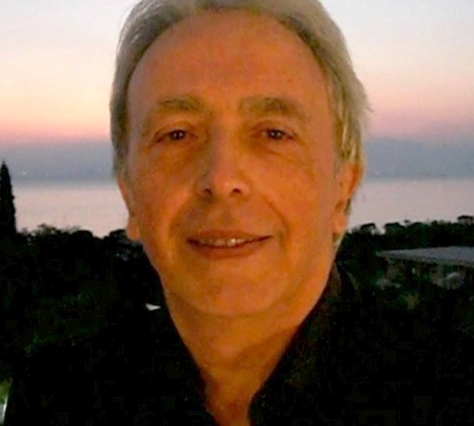

Pianista, Tastierista, Cantante, Compositore, Arrangiatore, Sound Engineer.
Ricercatore e sperimentatore di registrazioni in Olofonia Reale (no DSP) e di musica / ambience sonoro personalizzato per applicazioni psicologiche e training autogeni.
Nato a Napoli nel 1952.
Esperienza musicale in Italia e all’estero, con attività in Europa, Medio ed Estremo Oriente e Africa equatoriale.
Repertorio cantato in sei lingue, con evergreen italiani e internazionali e repertorio classico napoletano.
Collaborazioni: Ciro Sebastianelli, Gianni Nazzaro, Bobby Solo, Claudio Villa, Jepi & Jepi, Wilma Goich, Leopoldo Mastelloni.
Gruppi: Fabio Celi e gli Infermieri (1971), Napoli Centrale (1977).
Attività internazionale: Italia, Germania, Belgio, Norvegia, Iran, Giappone, Gabon.
Evergreen italiani e internazionali (6 lingue).
Repertorio classico napoletano.
Musica classica e colonne sonore con arrangiamenti personali.
Generi: commerciale ’50–’90, rock e jazz-rock ’60–’70, swing.
Esecuzione senza basi (no karaoke), eccetto drum machine con arrangiamenti personali dal vivo.
Sperimentatore di musica elettronica dal 1970.
Progettazione e costruzione di sintetizzatori e DSP.
Ricerca sull’Olofonia Reale con percezione esterna.
Composizione di musiche e testi per training autogeni.
Tecnica personale per sviluppare:
• Improvvisazione musicale
• Trasporto tonale in tempo reale
Per pianisti/tastieristi con buona preparazione di base.
Forme musicali con struttura progressiva e arrangiamenti descrittivi, lontani dagli standard commerciali.
Pianist, Keyboardist, Singer, Composer, Arranger, Sound Engineer.
Researcher and experimenter in Real Olofonia recording (no DSP) and personalized sonic ambience for psychological applications and autogenic training.
Born in Naples in 1952.
Musical experience in Italy and abroad, active in Europe, the Middle and Far East, and Equatorial Africa.
Vocal repertoire in six languages, including Italian and international evergreen songs and Neapolitan classics.
Collaborations: Ciro Sebastianelli, Gianni Nazzaro, Bobby Solo, Claudio Villa, Jepi & Jepi, Wilma Goich, Leopoldo Mastelloni.
Groups: Fabio Celi e gli Infermieri (1971), Napoli Centrale (1977).
International activity: Italy, Germany, Belgium, Norway, Iran, Japan, Gabon.
Italian and international evergreen songs (6 languages).
Traditional Neapolitan repertoire.
Classical pieces and film soundtracks with personal arrangements.
Genres: commercial ’50–’90, rock and jazz-rock ’60–’70, swing.
Performances without backing tracks, except drum machine with personal live arrangements.
Electronic music experimenter since 1970.
Design and construction of synthesizers and DSP devices.
Research on Real Olofonia with external spatial perception.
Composition of personalized music and texts for autogenic training.
Personal technique aimed at developing:
• Musical improvisation
• Real‑time tonal transposition
For pianists/keyboardists with solid basic preparation.
Preference for progressive musical forms with descriptive arrangements, distant from standard commercial formats.